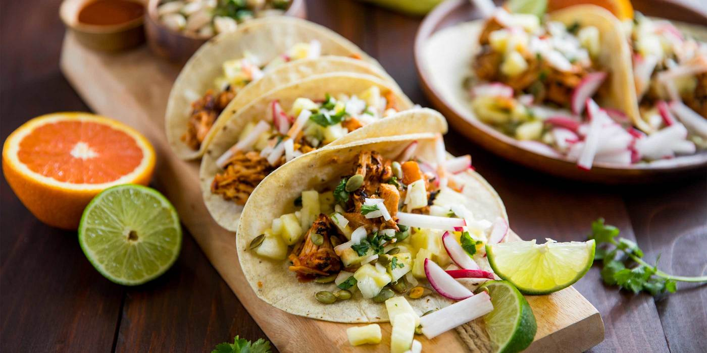

Vegan Pastor Tacos

Description
Vegan Al Pastor Tacos w/ Charred Poblano Tahini Sauce + Lime Cilantro Onions
In this veggie twist on tacos al pastor, pork is swapped out for roasted, cumin-and-oregano-spiced sweet potato and poblano. Once the veggies are tender and lightly charred, they’re piled into steamy tortillas along with pickled onion and jalapeño, warm pineapple salsa, hot sauce crema, and a sprinkle of cilantro. Yep, Tuesday (any day) just got a whole lot better.
Ingredients
- Jackfruit
- Lime
- Cilantro
- Salt
- Pepper
- Chile Ancho
- Chile Guajllo
- Pineapple
- Onion
- Garlic
- Tortillas
- Oranges
Steps
-
Adjust rack to top position and preheat oven to 425 degrees. Wash and dry all produce. Dice sweet potatoes into ½-inch pieces (peel first if desired). Core, deseed, and cut poblano into ½-inch pieces. Thinly slice jalapeño into rounds, removing ribs and seeds if you prefer less heat. Quarter and peel onion; thinly slice one quarter (two quarters for 4 servings; save the rest for another use). Mince garlic. Chop cilantro leaves and stems. Zest and quarter lime (quarter both limes for 4).
-
Toss sweet potatoes and poblano on a baking sheet with a large drizzle of olive oil (divide between 2 sheets for 4 servings). Season with salt, pepper, Southwest Spice, oregano, and half the cumin (you’ll use the rest later). Roast on top rack until tender, 20-25 minutes.
- Meanwhile, in a small microwave-safe bowl, combine vinegar, ½ tsp sugar (1 tsp for 4 servings), salt, and pepper. Stir in onion and jalapeño; cover bowl with plastic wrap. Microwave for 1 minute. Remove plastic wrap and set mixture aside, stirring occasionally, until ready to serve.
- Drain pineapple. Heat a drizzle of olive oil in a medium pan over mediumhigh heat. Add pineapple, garlic, lime zest, remaining cumin, and a pinch of salt. Cook, stirring, until pineapple is browned, 2-3 minutes. Remove pan from heat.
- In a second small bowl, combine sour cream and hot sauce to taste; season with salt. Add water 1 tsp at a time until mixture reaches a drizzling consistency. Wrap tortillas in damp paper towels and microwave until warm and pliable, 30 seconds.
- Divide roasted veggies, pineapple salsa, pickled veggies, and crema between tortillas. Garnish with cilantro. Serve with lime wedges on the side.